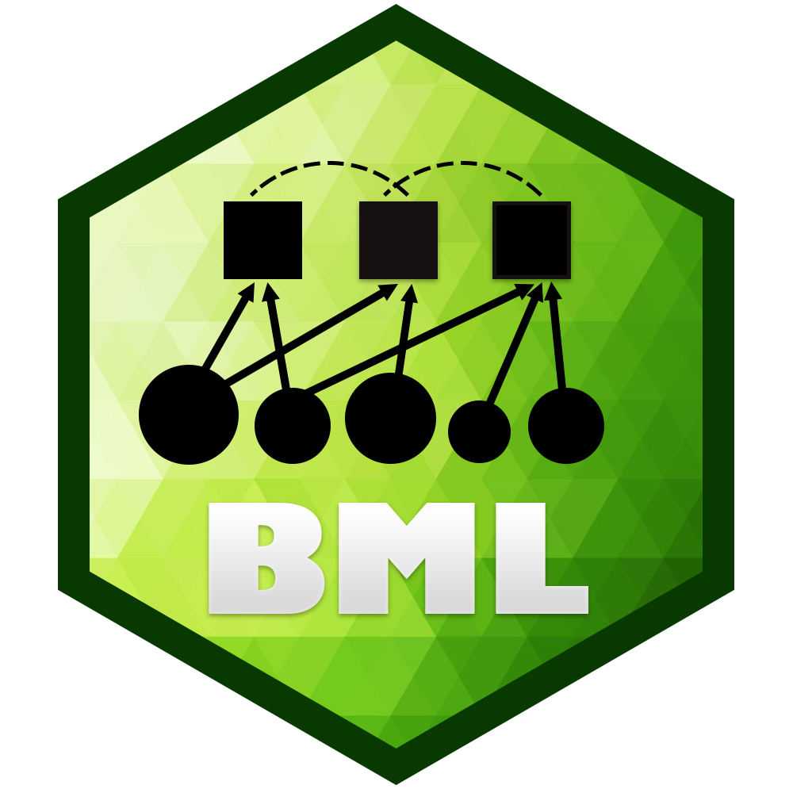

bml: Bayesian Multiple-Membership Multilevel Models with Parameterizable Weight Functions
bml is an R package for fitting Bayesian Multiple-Membership Multilevel Models with Parameterizable Weight Functions (“extended MMMM”) via JAGS. It supports a range of outcome types—including linear, logit, and survival models (Cox and Weibull)—and is designed for settings where researchers want to model how multiple units at a lower level jointly influence outcomes at a higher level.
In most multilevel analyses, the primary focus is on how higher-level contextual units (e.g., neighborhoods, schools, countries) shape outcomes observed at lower levels (e.g., individuals, students, governments), reflecting a macro-to-micro perspective. bml turns this logic around. Through an extended multiple-membership multilevel model, it allows researchers to explicitly model how the combined influence of many lower-level units propagates “upwards” to a higher-level outcome, enabling the study of micro-to-macro relationships.
Traditional approaches to micro-macro questions either (i) aggregate lower-level variables to the higher level (risking aggregation bias), or (ii) disaggregate higher-level outcomes to the lower level (artificially inflating sample size).
Both strategies obscure the underlying aggregation process, ignore the statistical dependencies present in the data, and prevent the decomposition of variance across levels. In contrast, the extended MMMM implemented in bml explicitly models aggregation through a weight function that may itself depend on parameters and covariates. This approach provides a theoretically grounded and statistically principled framework for studying micro-macro relationships using regression models.
With the bml package, you can
Model how lower-level units jointly shape higher-level outcomes: For example, how political parties shape coalition outcomes, how family members influence household decisions, and how subunits jointly shape organizational performance.
Compare and estimate aggregation functions: Test whether higher-level outcomes depend on the mean, sum, minimum, maximum, or other functions of lower-level features, instead of imposing a predefined aggregation.
Endogenize the weight matrix: Rather than imposing a fixed spatial or network weight matrix, allow connection strengths to be endogenously determined as functions of covariates.
Account for complex dependence structures: Simultaneously accommodate hierarchical, cross-classified, and multiple-membership structures, accounting for dependence patterns missed by conventional models and cluster-robust SEs.
Partition variance across levels: Estimate residual variance at lower and higher levels to see how much heterogeneity is attributable to each level in your data.
Where can you use bml?
Multiple-membership structures are common across the social sciences and beyond. The model was developed for coalition government data, but the same structure appears in many other settings, such as:
International relations: Multi-party conflicts, alliances and treaties, as well as international organizations with overlapping memberships.
Multi-level systems: Subnational units (e.g., regions, states, municipalities) that jointly shape national outcomes and may simultaneously participate in multiple higher-level arrangements.
Organization research: Individuals who shape team- and firm-level outcomes and may simultaneously participate in multiple teams, as well as organizations engaged in joint ventures or other interorganizational collaborations.
Spatial research: Neighborhoods or regions whose outcomes depend on the combined influence of surrounding areas. Here, bml allows the spatial weight matrix to be endogenized rather than imposed ex ante.
Network applications: Actors whose outcomes depend on the combined influence of their network neighbors (e.g., social, collaboration, or communication ties). While similar ideas have been explored in earlier work (e.g., Tranmer et al. 2014), bml extends this by allowing the network weight matrix to be endogenized rather than imposed ex ante.
In all these cases, bml provides tools to model dependence and interdependence: not just correcting standard errors for clustering, but explicitly representing how lower-level units combine to produce higher-level outcomes.
The following command fits an MMMM to coalition government data, modeling each coalition’s outcome as an equal-weighted combination of member parties’ organizational structure and random effects.
bml(
Y ~ 1 +
majority +
mm(
id = id(pid, gid),
vars = vars(org_structure),
fn = fn(w ~ 1 / n, c = TRUE),
RE = TRUE
),
family = "Gaussian",
data = coalgov
) |>
summary()Parties (pid) can appear in multiple governments (gid), and the party-level covariate org_structure enters the model through the multiple-membership term mm(). The weights are set to w ~ 1 / n (equal weights across the n parties in a coalition), and party-specific random effects are included via RE = TRUE.
Learn more
Rosche, B. (2026). A Multilevel Model for Coalition Governments: Uncovering Party-Level Dependencies Within and Between Governments. Political Analysis, forthcoming. Preprint
Installation
Install the stable version from CRAN:
install.packages("bml")Or install the development version from GitHub:
remotes::install_github("benrosche/bml")See the installation vignette for detailed instructions including JAGS setup.
Developers
I welcome contributions to the package! Feel free to submit changes for review or contact me if you have any questions.
Issues or Feature Requests
If you would like to log an issue or submit a feature request, please create a new issue on GitHub Issues.
Changelog
See NEWS.md for the package changelog.